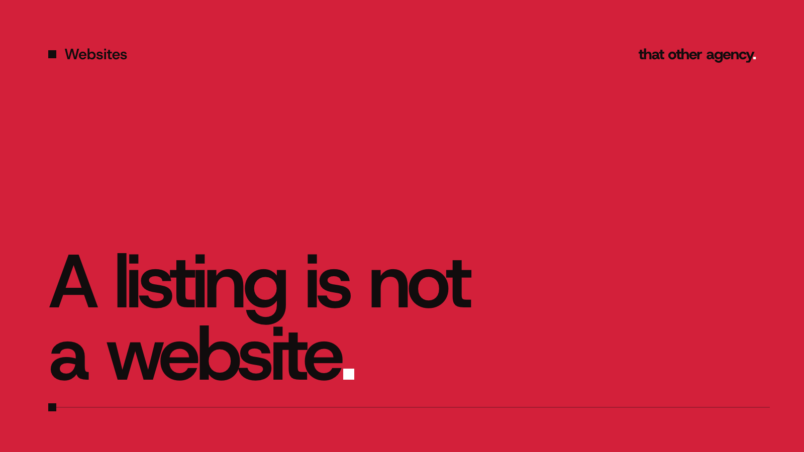

Websites
Do I need a website if I'm on Checkatrade? An honest answer

If your phone already rings from your Checkatrade profile, it is fair to ask: do I need a website if I'm on Checkatrade? Plenty of trades get by without one. But a directory listing and a website do different jobs, and the gap between them gets wider the more your business grows. Here is how to tell which side of that gap you are on.
What Checkatrade does well
It is worth being fair to the directory first. Checkatrade is a paid membership. You pay to be listed, it runs checks on your business before your profile goes live, and customers leave reviews that sit on your profile. For a homeowner who has never heard of you, that badge and that score do a lot of the trust work.
- It brings people who are ready to buy. Someone searching the directory for an electrician has a job that needs doing.
- The vetting is borrowed trust. A new customer believes the directory's checks before they believe your word.
- Reviews collect in one place. You don't have to build that system yourself.
- It is quick to start. You can be listed long before a website would be finished.
What a listing can't do for you
The problems are not about the directory being bad. They come from the fact that the listing is not yours.
- You sit next to your competitors. The customer sees you in a list of similar trades and compares on score, distance and price.
- You rent the space. If you stop paying, the profile goes, and so does the route customers used to find you.
- Your story is squeezed into their layout. A profile has room for a summary and some photos. It can't explain why your bathroom fits are better, or show a full project from start to finish.
- It ranks the directory, not you. When people search Google for your trade and town, the directory page competes for that spot. Your own name builds very little.
- Commercial clients look elsewhere. Letting agents, facilities managers and councils rarely pick contractors from a consumer directory. They search, then check your website.
Do I need a website if I'm on Checkatrade? Three questions
Answer these honestly and the decision usually makes itself.
- Do people search for your name? Word of mouth, vans and site boards all send people to Google with your business name. If the first result is a directory profile, or nothing, some of those people never get to you. A website is where a recommendation lands.
- Do you want different work from what you get now? If you want more boiler installs and fewer callouts, or more commercial jobs, you need pages that describe exactly that work. A directory profile can't target one service.
- What happens if the listing goes? If the honest answer is that the phone would go quiet, your business depends on a channel you don't control. A website is the cheapest insurance against that.
If you answered "no", "no" and "I'd be fine" to all three, keep your money for now. If any answer worried you, read on.
How the two work together
The best setup for most trades is both. The directory brings new customers who have never heard of you. The website turns everyone else into enquiries: the people who were recommended, saw your van or are comparing you with someone they found elsewhere.
- Point your reviews both ways. Mention your Checkatrade rating on your site, and ask happy customers to review you on Google too, so your own name earns stars.
- Give each service its own page. A page about exactly the job someone searched for beats a general profile every time.
- Name the places you cover. A page for each area you want work from helps you show up in local searches without paying per enquiry.
- Show real jobs. Your own photos and a short write up of the problem, the fix and the finish say more than any badge.
- Make contact easy. Tap to call and a short quote form on every page, because most of these visits happen on a phone.
We go through the pages a trade site needs in more detail on our website design for trades page.
What it costs to run both
A directory is an ongoing cost for as long as you want the enquiries. A website is mostly a one off build, with small running costs after that: your domain, possibly hosting, and changes when your services change. Many simple trade sites can be hosted for very little. Over a few years, the site is usually the smaller of the two bills, and it is the one you keep.
Every site we build starts with a consultation and a fixed quote, so you know the full cost before anything starts. You can see one trade site we rebuilt in our Elite Southwest case study, with a page for each service and the areas they cover.
Frequently asked questions
Should I put my website link on my Checkatrade profile?
If the profile lets you, yes. Some customers want to see more before they get in touch, and your site is where you can show it. Check your membership terms for what the profile allows.
Will a website get me as many leads as Checkatrade?
Not on day one. A new site takes months to build up search traffic, while a listing can bring enquiries quickly. That is why we suggest running both rather than switching.
Is a free Google Business Profile enough instead?
It is worth having either way, and it is free. But like a directory listing, it is a summary in someone else's layout. It works best when it links to a website that explains your services properly.